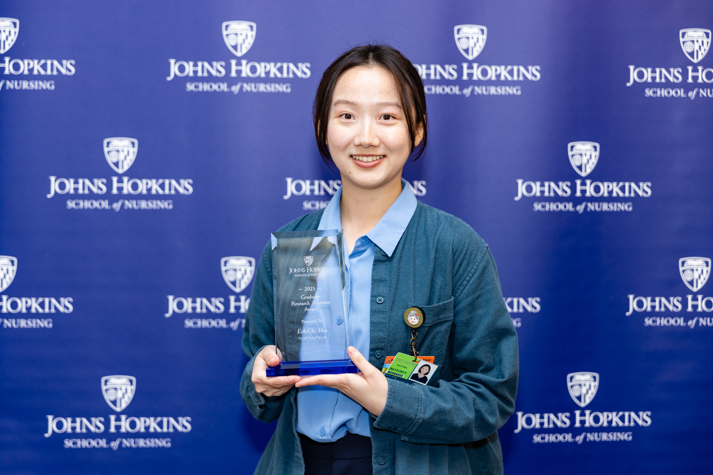

Bio
I am a PhD student at the Johns Hopkins School of Nursing. My long-term research goal is to identify ways to improve the well-being of older adults, their caregivers, and the long-term care workforce. My work spans the long-term care continuum, from community-based services to institutional settings such as assisted living (AL) communities and nursing homes (NH). Ultimately, my goal is to inform policy and payment decisions that enhance care quality and support a more sustainable and equitable workforce.
Currently, I am working on several projects: (1) a spatial analysis of long-term care market dynamics to examine whether increased assisted living capacity may delay or reduce nursing home admissions among people with dementia; (2) a geospatial study identifying co-located assisted living communities and nursing homes, including analysis of their characteristics and trends over time; and (3) the development of national policy coding databases on assisted living and adult day centers (as part of the RF1 and U54 grants, respectively), which capture how states regulate areas such as staffing, staff training, building requirements, and care processes. These policy data will later be merged with claims datasets to study the impact of regulation on older adults.
My dissertation focuses on the role of training requirements in assisted living. Using two national datasets—the National Post-Acute and Long-Term Care Study (NPALS) and the National Dementia Workforce Study (NDWS)—I will explore: (1) the impact of state-level enforcement on assisted living facilities; (2) how facilities adapt to these requirements; (3) how these adaptations affect workforce outcomes; and (4) how workforce practices relate to resident outcomes.
In addition, I lead a side project funded by the Center for Equity in Aging at Johns Hopkins School of Nursing, which uses longitudinal data from the National Health and Aging Trends Study (NHATS) to examine how engagement in various technology-related activities may influence cognitive functioning in older adults.
By training, I am both a public health and nurse scientist. Professionally, I have worked as a registered nurse in a geriatric ward and as a mixed-methods specialist for a Washington State Department of Health project evaluating emergency cardiac and stroke systems of care. Outside of my academic work, I’m a dedicated bird watcher!
This site includes my publications, presentations, and my projects, as well as a learning blog. Thank you for visiting.
Highlights
Awards
I recently receive the 2025 Graduate Research Assistant Award at the Research & Academic Affairs Awards Ceremony at Johns Hopkins School of Nursing! 
Publications
Li, J., He, R., Hsu, E. C., & Li, J. (2025). Network Analysis of Key Instrumental Activities of Daily Living and Cognitive Domains for Targeted Intervention in US Older Adults Without Dementia: Cross-Sectional Study. JMIR Aging, 8. https://doi.org/10.2196/67632
Hsu, E. C., Tsai, J. H.-C., Chim, K., & Spigner, C. (2025). Multi-level factors of Chinese American family caregivers of individuals with dementia during COVID-19. Geriatric Nursing, 62, 200–206. https://doi.org/10.1016/J.GERINURSE.2025.01.041
Huang, J., Spira, A. P., Perrin, N. A., Ellis, A., Hsu, E. C., Kaufmann, C. N., & Li, J. (2025). Latent classes of sleep problems and subjective cognitive decline among middle-aged and older adults in the United States. Archives of Gerontology and Geriatrics, 129, 105657. https://doi.org/10.1016/J.ARCHGER.2024.105657
Sabbatini, A. K., Parrish, C., Duber, H. C., Weaver, M., & Hsu, E. C. (2023). Report to the Legislature Emergency Cardiac and Stroke System Assessment. https://app.leg.wa.gov/ReportsToTheLegislature/Home/GetPDF?fileName=ECS%20Report%20(Chapter%2058%20Laws%20of%202022)_8c782540-b0f4-48b7-813d-fe1155f84d2a.pdf
Presentations
[2025 ARM] Hsu, E. C., Gadkari, G., Hua, C., Bunker, J., Smith, L., Jutkowitz, E., & Thomas, K. (2025, June). Changes in Long-Term Care Markets: Assisted Living Supply and the Prevalence of Nursing Home Residents with Dementia from 2019 to 2021 [Poster presentation]. 2025 Annual Research Meeting of the AcademyHealth. Minneapolis, MN, United States.
[2024 GSA] Hsu, E. C., Jutkowitz, E., & Thomas, K. (2024, November). The Association Between Digital Technology Activities and Cognitive Domains of Community Dwelling Older Adults [Poster presentation]. 2024 Annual Scientific Meeting of the Gerontological Society of America. Seattle, WA, United States.
[2024 Sleep & Circadian Research Day] Hsu, E. C., Szanton, S., Pantelyat, A., Kang, K., Huang, J., & Li, J. (2024, June). Effects of 40 Hz Auditory Interventions on Sleep and Cognition in Older Adults with Mild Cognitive Impairment [Oral presentation]. 8th Annual Johns Hopkins Sleep & Circadian Research Day. Baltimore, MD, United States.
[2023 GSA] Hsu, E. C., Tsai, J. H. C., Spigner, C., & Chim, K. (2023, November). Perceptions and Experiences of Family Caregivers of Older First-Generation Chinese Americans with Dementia [Poster presentation]. 2023 Annual Scientific Meeting of the Gerontological Society of America. Tampa, FL.
Side Projects
Emergency Room Dashboard: A dashboard presenting an overview on an emergency department and patient extractor for prolonged time by Tableau. [Link]
Program Performance Dashboard: A dashboard presenting the demographic overview, longitudinal attendance, and geographical distribution of participants in a program. Note: The data was de-identified or faked to protect the privacy of participants. [Link]